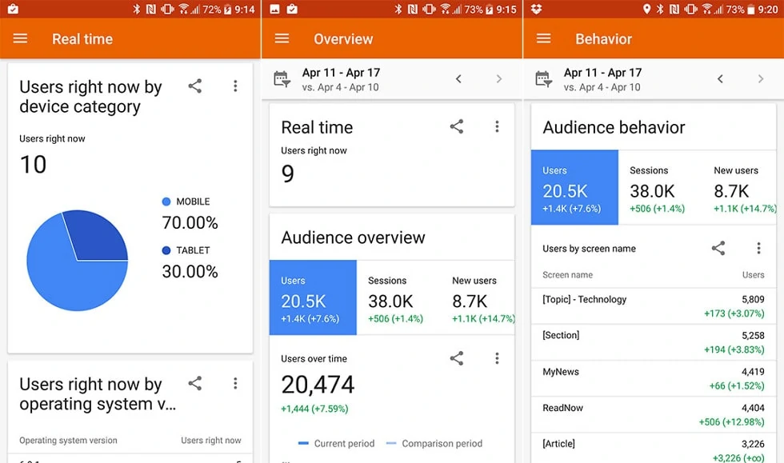
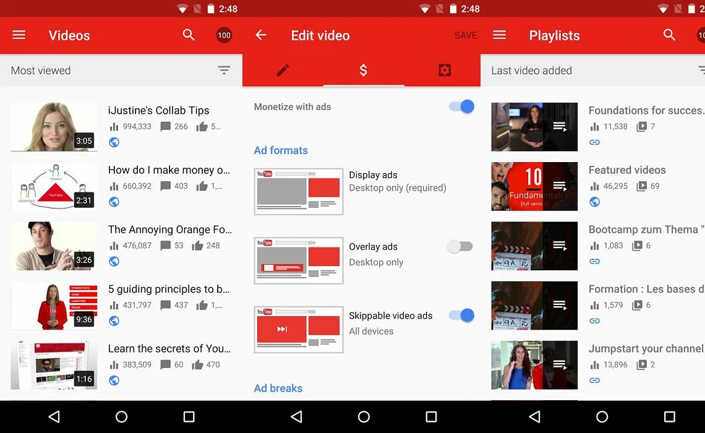
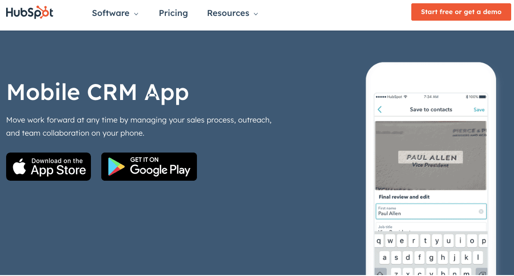
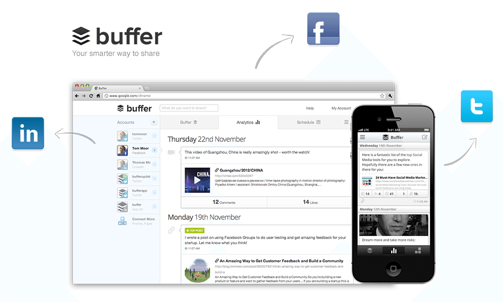
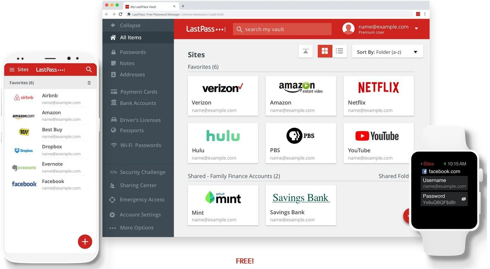

Top 20 Mobile Apps for Bloggers: You Shouldn’t Miss These Blogging
Apps
1. WordPress
Did you know that the WordPress platform is powered by over 35% of all sites across
the web? Yes, WordPress is the #1 CMS (Content Management System) in the world which
is used by millions of people worldwide.
What can you do with the WordPress app?
- You can publish blog posts or pages on the go
- You can add photos, videos from your album or gallery
- You can reply to the new comments
- You can check your website’s stats in real-time
- You’ll get notifications about comments, likes, new followers etc so you can
stay updated with your blog user’s engagement
- Also offers you WordPress Reader which you can use to explore thousands of
topics by tags
Quick note: If you’re on a self-hosted WordPress.org platform with a
Jetpack-powered site, you can publish posts and connect with your audience from your
smartphone.
Where can I download the WordPress app?
2. Blogger
Blogger is a free blogging platform by Google. Most beginners who are looking to
create a free blog usually start their blogging journey with the Blogger platform.
The simple reason is, you just need a Google account to start a free blog on
Blogger.
What can you do with the Blogger app?
- You can create a post which you can save as a draft or immediately publish
- You can edit existing blog posts easily
- If you’re running multiple blogs on Blogspot, you can easily switch account/blog
- The ability to embed images from the gallery
- You can also add labels to your posts
Where can I download the Blogger app?
- Blogger
Android app
- Quick note: Right now, there’s no official Blogging app for iOS
devices but there’s a helpful app called Blogg for Blogger that you can purchase
for $2.99 (it’s the most used Blogger app for iOS)
Buy Now
3. Gmail
Gmail is the #1 free email provider in the world which is developed by Google. As of
October 2018, Gmail announced that it has over 1.5 billion active users.
Why should you use the Gmail app?
As a blogger, you can’t live without email. You need to process a ton of emails
daily. From networking with other bloggers to accepting guest post requests, product
reviews etc – you’ll be using your email a lot. In fact, the majority of the people
use Gmail and it can be easily integrated with a lot of tools including email
marketing, SEO tools etc.
Here are some of the features of using the Gmail app.
- You can Undo your emails (if you’ve sent an email accidentally)
- You can easily switch between multiple accounts
- You can swipe to archive/delete, to quickly clear out your inbox
- Respond to Google Calendar invites right from the app
- You can organize your inbox by archiving, labelling, starring, deleting and
reporting spam
- You can also send and receive attachments
- Above all, you’ll get 15 GB of free storage with each Gmail account.
Where can I download the Gmail app?
4. Google Analytics
Google Analytics is a widely used web analytics tool which is offered by Google. It
tracks and reports your website traffic where you can find all the details including
your top-performing pages, total users, sessions, bounce rate and so on.

Why should you install Google Analytics app on your mobile?
If you’re a website traffic nerd who often wants to check traffic reports, traffic
drops or spikes, you might want to install Google Analytics app. Make sure to sign
in with your Google account to use Google Analytics app.
Here are some of the useful features of this app.
- You can monitor real-time traffic data
- You can check sessions, bounce rates, new users etc at one place
- You can get an overview of your website traffic (including mobile, desktop users
etc)
- Compare date ranges and apply segments
Where can I download the Google Analytics app?
5. Evernote
Evernote is the #1 note-taking app which is used by millions of people worldwide to
create notes which can be text, drawings, photographs, or saved web pages.
It offers a free version which gives you basic features but you can upgrade to their
premium versions to avail more features such as more storage space, offline access,
customer support etc.
Why should you use Evernote as a blogger?
From to-do lists, photos, images to web pages and audio files, you can save almost
anything on Evernote. The #1 reason to use Evernote as a blogger is you can use it
as a digital notepad so you can write and capture ideas whenever you want.
Here are some of the main reasons to use Evernote app.
- You can add a password to the mobile app for more privacy
- You can easily create notes in a wide range of formats including: text, photos,
screenshots, image files, audio and more
- It syncs across your devices (be it your laptop, smartphone or tablet) so your
information is always with you no matter where you go
- You can annotate documents with comments
Where can you download the Evernote app?
6. Quora
Quora is the world’s no.1 question and answer based website where questions are asked
and answered by users. Quora has a total of 300 million monthly active users
worldwide reported on Sep 2018.
What can you do with Quora?
If you’re a blogger, affiliate marketer or an SEO, you need a platform to build
traffic, grow your audience and network with other people. Here’s where a platform
like Quora comes into play.
It not only helps you with high-quality traffic but you can also write helpful
answers by linking to your own blog posts.
Here are some more benefits of using this app.
- You can ask a question and get answers
- You can also write answers for other people’s questions
- You can follow topics and space
- You can also view all your stats and get notifications (on followers, upvotes,
comments etc)
Where can you download the Quora app?
7. YouTube Studio App
The official YouTube Studio app is made for every YouTuber as it makes it easier to
manage all your YouTube channels on the go. If you’re running a YouTube channel or
planning to launch one, you should definitely install this app.

Why should you use the YouTube Studio app?
If you’re a blogger, you might already know the importance of YouTube. Not only it
helps you grow your audience but you can increase your sales, traffic etc with
YouTube.
If you’ve access to the YouTube Studio app, you can track everything from subscribers
to video views on your mobile device. Here are some amazing features you can avail
from this app.
- Gives you access to all your YouTube channel metrics including impressions,
impressions click-through rate, and unique viewers
- Easily filter and respond to your YouTube video comments
- You can get instant notifications when something important happens
- You can also update your YouTube channel video details including description,
titles thumbnail images, monetization settings, and schedule dates
- The ability to create and update your YouTube account profile pictures
Where can you download the YouTube Studio app?
8. HubSpot
HubSpot is an all-in-one CRM tool that connects you to your customer database, sales,
service, and marketing tools, and your website through their new CMS. With the
mobile app, you can take your business operations on the go.

Why should you install the HubSpot app on your mobile?
If you’re a business owner or a part of your sales, marketing, or service teams who
needs access to your tools on the move, you should install the HubSpot app. You can
even use the app if you are using HubSpot’s free tools as well!
Here are some of the useful features of this app.
- Create tasks, reminders, and deals from your CRM database
- Access client and customer information including emails, phone numbers, company
information, and more
- Directly send sales assets, email templates, and live chat communications
- Real-time mobile sync and collaboration capabilities with team members
Where can I download the Hubspot app?
9. Any.do
Any.do is the #1 to-do list app that is used by more than 25 million people worldwide
to stay productive and save time for the things that actually matter.
Why should you install Any.do app?
We all know how important productivity is. The best way to get more things done in a
day is to create to-do lists for the day. Once you get into the habit of creating
to-do lists and finishing off all the tasks, you’ll not only stay organised but
you’ll become a productive blogger.
With Any.do app, you can do the following things.
- You can use it as an all-in-one to do list, calendar, planner and reminders app
- You can connect Any.do with over 2000 apps including Gmail, Google Calendar,
Evernote, Outlook etc
- You can drag & drop tasks to plan your day
- The ability to attach notes, files or add sub-tasks
- You can search lists, tasks, notes & sub-tasks within the app
- You can also add one time or recurring reminders so you will not forget anything
that’s important
Where can you download Any.do app?
10. Canva
Canva is undoubtedly the BEST graphic design app that can be used as a logo maker and
image editor which makes it easier for you to create appealing images.
Why should you be using Canva?
If you’re looking to create appealing images (be it a logo, featured image for your
blog posts or banners), Canva is the perfect image editing tool for you. If you’re
not on your laptop, you can use the Canva app to create great images for your blog
on the go.
Here are some of the features of Canva app:
- From logos to banners to social media posters, you can use Canva to literally
design anything (including YouTube video thumbnails, infographics and so on)
- Gives you access to over 60,000 FREE templates created by professional designers
which you can use to create amazing images and graphics
- Free to use (although you might need to buy copyright images if you want)
- Gives you access to a free image editor which you can use to apply photo
filters, change up the brightness, add vignette and so on
- Above all, you can share your images directly to Instagram, WhatsApp, email etc
or you can simply save your designs to your device.
Where can you download the Canva app?
11. Twitter
Twitter is the most influential social networking app where you can find all the
latest happenings around the world.
Why use Twitter?
If you want to follow trending topics in your region, Twitter is the best platform.
Also, most of the influencers across various industries use Twitter. So it’s the
best way to connect and engage with other bloggers.
Here are the features of Twitter app;
- Using their app, you can tweet, retweet, reply to other tweets
- You can also share or Like other tweets
- You can change your twitter bio, profile picture, add a background etc
- You can post visual content (such as gifs, images, videos etc)
- Use hashtags in your tweets
Where can you download Twitter?
12. Upwork
Whether you’re a freelancer who’s looking for remote work or someone who is looking
for affordable projects like writing, design, SEO etc Upwork is the perfect
marketplace for you. If you’re looking for blogging apps that pay for your work (and
gigs), you should definitely install UpWork.
Why should you use Upwork app?
If you’re an agency or a blogger who is looking to outsource projects such as content
writing, social media marketing, email marketing, web design etc Upwork is
definitely a great platform.
You can also offer your freelance services to earn money from Upwork. Here are some
of the features of this app.
- If you’re looking to outsource, you can post a job for free (you’ll get
qualified proposals within 24 hours and you can compare bids, reviews, and prior
work to choose the right people for your projects)
- If you’re a freelancer, you can find jobs, gigs etc according to your skills
(create a winning bid to start working on the projects to earn money online)
- Use your mobile app to communicate, share files, and collaborate with others
Where can you download the Upwork app?
13. Buffer
Buffer is one of the most useful social media managing apps for bloggers and
marketers. Using Buffer app, you can publish your content on all your social media
profiles including Instagram, Facebook, Twitter, Pinterest, and LinkedIn.

Why should you install the Buffer app?
If you are looking to increase your social media engagement or planning to schedule
your social media posts in advance, Buffer app is just for you.
Here are a few more awesome features:
- You can schedule your posts in advance
- You can analyse your social media posts (based on their metrics such as clicks,
engagement etc)
- It also offers you a basic Free plan where you can manage 3 social accounts and
create 10 scheduled posts per day
Where can you download the Buffer app?
14. WhatsApp
WhatsApp is undoubtedly the most used free messaging app with billions of users and
owned by Facebook. WhatsApp is also one of the best android apps for bloggers and
it’s the most downloaded app in the history of Play Store with over 5 billion
downloads.
Why use WhatsApp?
If you’re looking to build an audience around your blog, you can easily invite your
Facebook group members, Twitter followers, email subscribers etc to join your
WhatsApp group so you can communicate regularly.
Here are some of the features;
- Completely free to use
- You can send and receive photos, videos, documents (including Voice Messages)
- Enables you WhatsApp calling (which allows you to call someone for free even if
they are in other countries)
- Enables you group chats with your contacts so you can easily stay in touch with
your friends and followers
Where can you download WhatsApp?
15. Telegram
Telegram is a FREE messaging app which quickly became a better alternative to
WhatsApp. Since it is a cloud-based messenger, you can use it on all your devices at
the same time.
Why should you use the Telegram app?
If you want to manage a huge group of your blog followers on your mobile device,
Telegram is the perfect choice for you. Here are some incredible benefits of using
this app.
- Completely free to use
- Telegram groups can have up to 200,000 members
- Telegram hosts files up to 1.5 GB each (whereas WhatsApp limits files to 16 MB)
- You can send media and files, without any limits on their type and size
- Offers you secret chats that have self-destructing messages and no content is
saved on the cloud (that simply means, if you log out of a device, the chat
would be lost forever)
Where can you download the Telegram app?
16. Pocket
Pocket (previously known as Read It Later) is a popular productivity app which lets
you save articles, videos and webpages you find online so you can read later (even
offline).
Why should you use the Pocket app?
As bloggers and marketers, we frequently consume a ton of information online
(including articles, news, videos, podcasts etc). It’s easy to forget what we
consume. So if you find something important or interesting, you can use the Pocket
app to read later.
Here are some benefits of this app;
- This app will download a minimalist version of an article, blog post, video or
anything you want (so you can come back to that web page anytime you want)
- Pocket’s listen feature is extremely useful as it turns any news story, article,
or blog post into an audio file (so you can actually listen while working)
- You can read anywhere (even offline)
- You can save from anywhere online
Where can you download the Pocket app?
17. Google Docs
Google Docs is a free word processor offered by Google in its G Suite. You can use
Google Docs to create, edit and share text documents with others through emails. If
you’re a blogger or writer, Docs is an essential writing and editing tool.
Why should you use Google Docs?
We’ve been using Google Docs for content creation. We write in Google Docs and then
upload them on to the WordPress dashboard (not only is it easy to share and edit)
but it also corrects your grammatical errors.
Here are some of the features of Google Docs app;
- You can create new documents, edit and share your documents with others
- You can use it anywhere, any time (even offline) and it automatically syncs your
documents when you’re online
- You don’t have to worry about data loss because everything is saved
automatically as you type
- You can download your documents in many formats including PDF, MS Word, ePUB etc
Where can you download Google Docs?
18. Facebook Pages Manager
Facebook Pages Manager is the official app from Facebook which allows you to post
content to your pages, respond to comments and even manage your Facebook page ad
campaigns.
Why should you install Facebook Pages Manager app?
If you want to manage your Facebook page on mobile, the Facebook Pages Manager app is
just for you.
Here are some of the awesome features of this app;
- It allows you to post anything on your FB pages without even using your laptop
or computer
- You can easily reply to all the comments on messages on your FB pages
- You can schedule your posts in advance
- You can manage your FB ads (create ads, stop them, edit them and so on)
- You can link both your FB and Instagram accounts to manage all the messages, and
comments on your posts
Where can you download the Facebook Pages Manager app?
19. LastPass Password Manager
LastPass is the world’s #1 password manager and LogMeIn, Inc. acquired LastPass in
2015. If you’re tired of remembering your passwords and looking for the best way to
store your passwords at one place, LastPass is for you.

Why should you use the LasPass Password Manager app?
LastPass is a password manager which securely stores your passwords in a secure vault
(everything is encrypted and safe). As you visit an app or other websites, LastPass
auto fills your login details.
You just have to remember your LastPass master password and LastPass will autofill
logins for you. So yes, it’s an essential mobile app for every blogger.
Here are some useful features of this mobile blogging app.
- You can use LastPass across all your devices including your smartphones,
tablets, laptops for free
- It offers you free syncing (which means, anything you save on one device such as
your laptop is instantly available on all other devices such as tablets, phones
etc)
- You can also store information like credit card numbers
- Offers you multi-factor authentication for even more security
Where can you download the app?
20. IFTTT
IFTTT (If This, Then That) brings your favorite services together as it effortlessly
works with over 600 apps including Twitter, Telegram, Gmail etc and devices like
Google Home, Amazon Alexa etc.
Why should you use IFTTT app?
With this app, you can simplify and automate everyday tasks between apps. You can
perform so many tasks such as text yourself if rain is forecast for tomorrow, share
a photo on Telegram immediately when you take it and so on.
Here are some features of this amazing app;
- You can easily manage your social media
- Track your work hours in Google calendar
- You can backup and share your smartphone photos automatically
- You can post all your Instagram photos as Twitter photos or Pinterest pins
Where can you download the app?